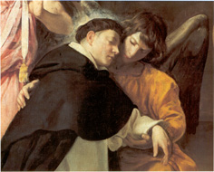

|  |
|---|
[84940] Super Iob, cap. 42 Respondens autem Iob domino dixit et cetera. Postquam dominus redarguit Iob de incauta locutione quae superbiam sapere videbatur, quia scilicet se intantum iustum asserebat quod hoc quibusdam videbatur in derogationem cedere divini iudicii, Iob humiliter se convictum reputans respondet: primo quidem confitendo divinam excellentiam quantum ad potentiam, unde dicit respondens autem Iob domino dixit: scio quia omnia potes, et etiam quantum ad scientiam, unde subdit et nulla te latet cogitatio. Per quorum primum confitebatur quod Deus poterat adversitatem removere a Diabolo inductam, quem dominus sub figura Vehemot et Leviathan descripserat; per secundum autem recognoscit se interius fuisse aliqua cogitatione superba pulsatum, quod Deum non latuisse recognoscit, et ideo consequenter invehitur contra eos qui divinam providentiam negant dicens quis est iste qui celat consilium absque scientia? Idest quis est tam praesumptuosus et stultus qui dicit humanum consilium posse celari a Deo absque hoc quod Deus illud cognoscat? Ex consideratione autem divinae excellentiae procedit ad considerationem propriae culpae cum subdit ideo insipienter locutus sum, scilicet debitam reverentiam non exhibens divinae excellentiae in meis verbis, et quae ultra modum excedunt scientiam meam, scilicet discutiendo divina iudicia. Et quia insipienter locutus sum, de cetero loquar sapienter, unde subdit audi et ego loquar, meam scilicet culpam confitendo; et quia locutus sum quae excedunt scientiam meam, de cetero de ea non audeo loqui sed solum de his te interrogare, unde subdit interrogabo te, scilicet petendo, orando, pulsando, et responde mihi, scilicet interius instruendo. Quare autem sic mutatus sit ostendit subdens auditu auris audivi te, scilicet olim cum insipienter loquerer, nunc autem oculus meus videt te, idest plenius te cognosco quam prius, sicut id quod videtur oculis certius cognoscitur quam quod aure auditur: profecerat enim tum ex percussione tum ex revelatione divina. Quanto autem aliquis magis Dei iustitiam considerat tanto plenius culpam suam recognoscit, unde subdit idcirco ipse me reprehendo, propriam scilicet culpam considerando. Et quia non sufficit culpam confiteri nisi sequatur satisfactio, ideo subdit et ago paenitentiam in favilla et cinere, in signum scilicet fragilitatis naturae corporeae: convenit enim humilis satisfactio ad expiandam superbiam cogitationis. Quia ergo superius dominus redarguerat Eliud et etiam Iob, nunc tertio redarguit amicos eius, inter quos praecipuus erat Eliphaz - quod patet ex hoc quod primo loqui inceperat -, unde dicitur postquam autem locutus est dominus verba haec ad Iob, dixit ad Eliphaz Themanitem: iratus est furor meus in te et in duos amicos tuos, scilicet Baldath et Sophar. Ubi considerandum est quod Eliud ex imperitia peccaverat, Iob autem ex levitate, et sic neuter eorum graviter peccaverat: unde nec dominus dicitur iratus fuisse contra eos, sed contra tres amicos Iob graviter dicitur fuisse iratus quia graviter peccaverant perversa dogmata asserendo, ut supra habitum est, unde subdit quoniam non locuti estis coram me rectum, idest fidelia dogmata, sicut servus meus Iob, qui scilicet a veritate fidei non recessit. Pro gravibus autem peccatis expiandis antiqui consueverunt sacrificia offerre, unde subdit sumite igitur vobis septem tauros et septem arietes, quia scilicet ipsi erant duces populorum; septenarius autem est numerus universitatis, unde septenarius sacrificiorum competit ad gravium delictorum expiationem. Sed quia infideles per fideles Deo reconciliari debent, subdit et ite ad servum meum Iob, ut scilicet eo mediante mihi reconciliemini, et offerte pro vobis holocaustum, ut scilicet vos satisfaciatis qui peccastis. Sed vestra satisfactio indiget fidelis viri patrocinio, unde subdit Iob autem, servus meus, orabit pro vobis, qui scilicet dignus est exaudiri propter suam fidem, unde subdit faciem eius, scilicet deprecantis, suscipiam, scilicet exaudiendo eius orationem, ut non imputetur vobis stultitia, scilicet infidelis dogmatis; et hoc exponit subdens neque enim locuti estis coram me rectum sicut servus meus Iob. Accepta autem spe veniae, impleverunt quod eis fuerat mandatum, unde sequitur abierunt ergo Eliphaz Themanites et Baldath Suites et Sophar Naamathites, et fecerunt sicut locutus fuerat dominus ad eos. Et ita per oboedientiam et humilitatem suam digni facti sunt ut pro eis oratio Iob exaudiretur, unde sequitur et suscepit dominus faciem Iob, rogantis scilicet pro amicis suis. Nec solum humilitas amicorum efficaciam praestitit eius orationi sed etiam humilitas propria, unde subditur dominus quoque conversus est, scilicet a furore in clementiam, ad paenitentiam Iob, cum oraret pro amicis suis: dignum enim erat ut qui pro suo levi peccato humiliter paenitebat etiam aliis graviter peccantibus veniam impetraret. Plus autem prodest unicuique sua paenitentia quam aliis, unde si oratio et paenitentia Iob meruit amotionem indignationis divinae ab amicis, multo decentius fuit ut etiam ipse ab adversitate liberaretur. Et quamvis Iob spem suam non referret ad prosperitatem temporalem recuperandam sed ad consequendam futuram felicitatem, dominus tamen ex abundanti etiam prosperitatem temporalem ei restituit, secundum illud Matth. VI 33 primum quaerite regnum Dei et iustitiam eius, et haec omnia adicientur vobis. Et hoc quidem tempori congruum erat propter statum veteris testamenti in quo temporalia bona promittebantur, ut sic per prosperitatem quam recuperaverat aliis daretur exemplum ut converterentur ad Deum; erat etiam congruum personae ipsius Iob, cuius apud aliquos opinio laesa erat propter multiplices adversitates quae supervenerant ei, et ideo ut ei famam restitueret, ad statum maioris prosperitatis eum reduxit, unde sequitur et addidit quoque dominus omnia quaecumque fuerant Iob duplicia. Inter adversitates autem Iob quasi praecipua erat quod fuerat ab amicis suis desertus, et ideo huius adversitatis primo remedium ponitur cum dicitur venerunt autem ad eum omnes fratres sui et universae sorores suae et cuncti qui noverant eum prius, in quo designatur recordatio pristinae amicitiae, et comederunt cum eo panes in domo eius, in quo designatur reditus ad antiquam familiaritatem, et moverunt super eum caput, scilicet compatiendo afflictioni ipsius. Et quia non solum oportet afflictis compati sed etiam eorum afflictioni remedium praebere, primo quidem praebuerunt remedium eius interiori dolori per consolatoria verba, unde subditur et consolati sunt eum super omni malo quod intulerat dominus super eum; secundo autem adhibuerunt subventionis remedium contra exteriorem inopiam, et quia amiserat et animalia in campis et supellectilia in subversione domus, ideo in utroque ei subveniunt, sequitur enim et dederunt ei unusquisque ovem unam, quantum ad animalia, et inaurem auream unam, quantum ad supellectilia. Haec autem modicum fuissent ad reparationem ipsius, sed dominus manum suam adhibuit ut ex his in maiora proficeret, unde sequitur dominus autem benedixit novissimis Iob, scilicet multiplicando ea, magis quam principio eius, idest quam primae eius prosperitati: est enim potens plus facere quam intelligimus aut petimus, ut dicitur Eph. III 20. Desideraverat autem Iob supra XXIX 2 ut esset iuxta menses pristinos, sed dominus ei maiora restituit et in duplo, ut supra dictum est, unde sequitur et facta sunt ei quatuordecim millia ovium: supra enim dictum est quod fuit possessio eius septem millia ovium; et sex millia camelorum: nam primo habuerat tria millia camelorum, ut supra dictum est; fuerant etiam ei quingenta iuga boum, unde hic duplum ponitur cum dicitur et mille iuga boum; supra etiam dictum est quod habuerat quingentas asinas, sed hic duplum ponitur cum sequitur et mille asinae. Amiserat autem non solum possessiones sed etiam filios, qui ei restituuntur sed non in duplum, sequitur enim et fuerunt ei septem filii et tres filiae, cuius ratio duplex esse potest: una pertinens ad futuram vitam, quia scilicet filii quos habuerat non totaliter ei perierant sed reservabantur in futura vita cum eo victuri; alia ratio potest esse quantum ad vitam praesentem, nam si duplicatis ceteris rebus etiam numerus filiorum esset duplicatus, non videretur fortuna domus augmentata fuisse, quia eandem quantitatem in bonis eius unusquisque filiorum habuisset quam prius; et ideo decentius fuit ut proles ei augeretur non numero sed magis in valore. Quod occulte insinuatur in filiabus quae pulcherrimae fuisse leguntur, quarum pulchritudini etiam nomina conveniunt, sequitur enim et vocavit nomen unius diem, scilicet propter claritatem eius, et nomen secundae cassiam, quae est species aromatica, propter suavitatem ipsius, et nomen tertiae Cornustibii: est autem stibium quo mulieres utuntur ad ornatum oculorum, secundum illud IV Reg. IX 30 depinxit oculos suos stibio et ornavit caput suum, quod quidem stibium in cornu a mulieribus conservatur ut habeant ipsum paratum cum opus fuerit, unde vocavit eam Cornustibii ad designandam abundantem pulchritudinem oculorum; unde et de pulchritudine earum subditur non sunt autem inventae mulieres speciosae sicut filiae Iob in universa terra. Per quod etiam datur intelligi quod filii eius erant in virtute praecellentes, sequitur enim deditque eis pater suus hereditatem inter fratres earum, scilicet ad designandum convenientiam virtutis in utrisque. Et quia Iob etiam in proprio corpore fuerat flagellatus, additur ei ad prosperitatis augmentum longitudo dierum, unde sequitur vixit autem Iob post flagella haec centum quadraginta annis. Et ut intelligatur toto hoc tempore in prosperitate vixisse, subdit et vidit filios suos et filios filiorum suorum usque ad quartam generationem. Et ista prosperitas datur intelligi durasse usque ad mortem, unde sequitur et mortuus est senex, quod pertinet ad diuturnitatem vitae, et plenus dierum, quod pertinet ad vitae prosperitatem, unde supra ad designandum suam adversitatem dixit sic et ego habui menses vacuos; unde et per plenitudinem dierum designatur abundantia ipsius et quantum ad bona fortunae et quantum ad bona gratiae, quibus perductus est ad futuram gloriam quae durat per omnia saecula saeculorum. Amen.